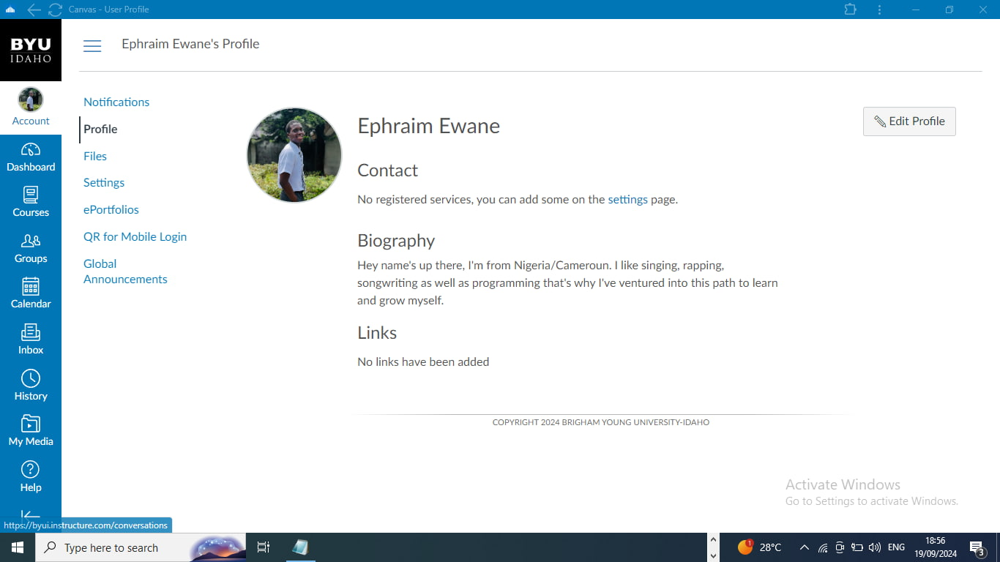

Ephraim Soleil Ewane | WDD 130
Hey name's up there, I'm from Nigeria/Cameroun. I like singing, rapping, songwriting as well as programming that's why I've ventured into this path to learn and grow myself. I'm the last child with 3 siblings all females. I'm a member of The Church Of Jesus Christ Of Latter Day Saints. I served on Enugu mission as a missionary for the duration of Two years.